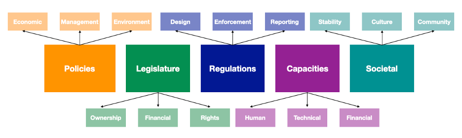
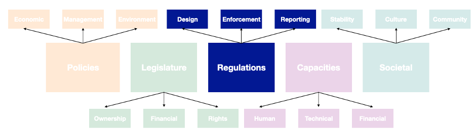
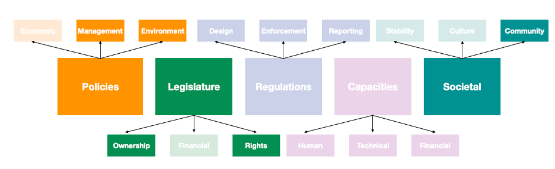
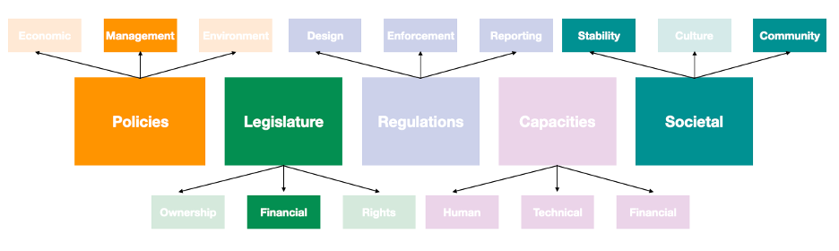
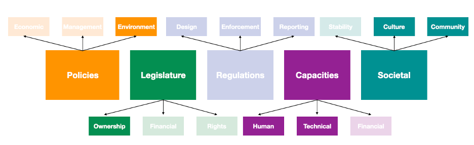

This mini-lecture highlights important challenges in infrastructure governance using the framework of the enabling environment to identify common factors that can hinder effective governance. It focuses on the importance of balanced regulations, shared legal frameworks, political continuity, and stakeholder engagement. Succinct examples illustrate specific instances of enabling environment factors impacting governance and management of infrastructure.
Infrastructure projects are planned, financed, constructed, and operated in unique governance and social settings that shift over time and space. This complex setting is referred to as the enabling environment. One definition for the term offered by the United Nations Office for Project Services is “a series of structural elements that…support achievement of development objectives in infrastructure.” In the academic literature, however, the term is broadly applied and is used to encompass a multitude of factors. Thus, the literature has yet to come to a consensus on its definition and constituent components. Research is ongoing in the field and preliminary thinking suggests that important constituent categories include the policy, legal, and regulatory environments, as well as the capacity of agencies to manage infrastructure, and human societal factors.

Figure 19.2.1: A simplified classification of the components of the enabling environment for infrastructure development
These intangible, contextual aspects of infrastructure governance can play an important role in enabling or hindering success. In the following sections of this mini-lecture, we will illustrate a few common challenges faced in developing effective infrastructure governance. Through the lens of the enabling environment, we will highlight and discuss:
Balancing regulation and enforcement
Transboundary governance
Political continuity
Participatory planning

Figure 19.2.2: A simplified classification of the components of the enabling environment highlighting the components most relevant to regulations
In the infrastructure sector, regulations are rules set out by government authorities to ensure that standards for safety, service, and integrity are met, and they are usually accompanied by a framework for evaluation and penalty enforcement. Balancing regulations and enforcement is critical for ensuring that infrastructure actors share goals which align across different levels of sector operations.
In well-developed regulatory environments, one common challenge is over-regulation, which insists on reporting and evaluation that can become burdensome to regulated parties. Oftentimes precise goals and metrics diminish flexibility in infrastructure management, operations, and governance. Indeed, Hallegatte and Engle (2019) poses that the development of poorly designed infrastructure regulations and metrics encourages systems to disproportionately focus on achieving high metric outcomes at the expense of effective service—thus creating and propagating perverse incentives within the sector.
In lesser-developed regulatory environments, infrastructure is primarily concerned with service delivery, and evaluation may be less well-resourced. A symptom of this imbalance is that data collection, management, and transparency suffer, making evaluation and improvement hard to quantify. In settings with unreliable data, it is not uncommon for regulators to emplace higher standards than are necessary, with the recognition that some assets my fall short of expectations but will then still achieve outcomes with reasonable safety.
In either of these extreme regulatory contexts, there is a need to balance reporting requirements, data availability, and penalties, to ensure reasonable compliance and safety, without unreasonable burden. Through this process, infrastructure actors should have the autonomy to flexibly meet their goals and regulatory requirements.

Figure 19.2.3: A simplified classification of the components of the enabling environment, highlighting the components most relevant to transboundary governance
The geographies of infrastructure are important not simply because they describe service areas, but also because they can dictate the legal constraints of service, management, and interactions with other infrastructure. In cases where geopolitical boundaries do not align to asset management boundaries, there is an opportunity for conflict. Geographic boundaries can be particularly important when managing assets that share joint infrastructure networks, or those that span across national and sub-national jurisdictional boundaries.
A critical example of ongoing governance across national boundaries is that of the United States and Mexico, which share river flows across their borders. The challenges that arise in creating effective governance here tend to centre around legal disputes of water rights and fulfilment of those requirements for ecosystems and environments. On either side, consumers of these critical supplies claim historic ownership, but differing definitions lead governments to dispute this. Officially, the governance of these rivers had been set forth in the U.S.-Mexico Treaty of 1944, but ongoing cooperation is an important part of maintaining trust and follow-through on agreements—a challenge between the two countries, but also between the governments and their own communities (Mumme 2020).
This example is only one of many across the globe where it has been imperative for infrastructure managers and decision-makers to be deliberate about cooperative governance of resources. From the literature, Moore (2018) recognises the importance of these joint governance endeavours, but also demonstrates in his work that subnational resource conflict is a burgeoning concern for infrastructure that is widely unattended to.

Figure 19.2.4: A simplified classification of the components of the enabling environment, highlighting the components most relevant to societal stability and political influence
Political instability is caused during leadership turnover, where changes in power structures can yield inefficiencies in the absence of effective transition management policies. Even with effective policies, however, violent instability can give rise to challenges with infrastructure governance beyond the physical impacts of the violence. The World Bank notes that the intangible effects of violence lead to a perception of future instability (Kaufmann, Kraay, and Mastruzzi 2011), which can be damaging to foreign investments as confidence in legislative protections are diminished.
Peaceful political turnover is routine in democratic settings but can still lead to diminished quality of infrastructure service either through slowdowns in bureaucracy as new power structures and process are formed, or through deliberately diminished quality of infrastructure services. This former outcome has been noted in contexts with long-term infrastructure projects where a rivalling political faction or party leaving power undermines their own progress to minimise the likelihood of rivals claiming its success.
Systemic underfunding through the artificial suppression of publicly-managed utility rates is a widely accepted example of community influence on political leaders. Elected officials, incentivised to placate their voter base, may choose to delay much needed rate increases to the term of their successor. This repeated practice, among others, has led to utilities being routinely underfunded (Rozenberg and Fay 2019), as customers pay rates that have stagnated in comparison to the cost of operations.

Figure 19.2.5: A simplified classification of the components of the enabling environment, highlighting the components most relevant to participatory planning and stakeholder engagement
Participatory planning and stakeholder engagement are important in infrastructure governance, as they enable the incorporation of local knowledge and build confidence and community investment in successful outcomes. Importantly, thoughtful stakeholder engagement can minimise systemic biases by giving voice to otherwise marginalised stakeholders like low-income households. Parfitt (2004) distinguishes the benefits of participation by its intended outcome: whether it is undertaken as a means or an end.
As a means, participation is a way to extract, interpret, and integrate local knowledge into infrastructure development, operations, and governance. It is a useful way to validate assumptions, collect new data, anticipate environmental and community impacts, and understand the cultural, human and technical capacities of the workforce. As an end, participation does not necessarily seek to gather information to inform infrastructure processes, but instead seeks to educate and engage. It builds trust in the project, a sense of community ownership, and thus an investment in its success. Through this second approach, infrastructure projects obtain a “Social License to Operate” (SLO).
While not usually an explicit goal in infrastructure development, a SLO is the intangible legitimacy that is conveyed to a project by stakeholders and communities (Demuijnck and Fasterling 2016). Without some form of SLO, communities reject infrastructure projects and can mobilise civil partners, advocacy groups, and workers unions to disrupt or slow their progress. One world-renowned example of an infrastructure project critically halted due to poor community acceptance is in Bolivia’s Cochabamba Water War, where communities protesting the increasing price of water effectively shut down facility operations by disrupting workers.
In this mini-lecture, we established a simplified framework for the enabling environment and used that as a tool to give a brief introduction on some of the common infrastructure governance challenges faced.